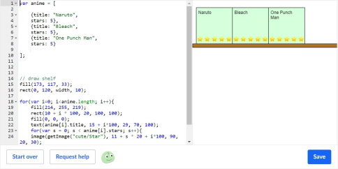
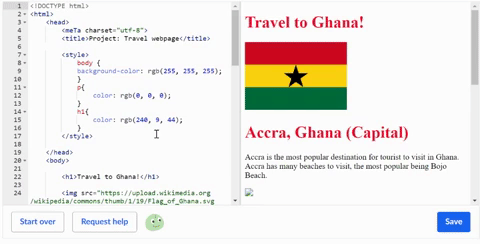
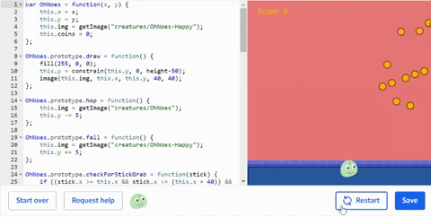

Khan Academy: Intro to JS - Drawing and Animation
Bookshelf

In this module, I decided to choose the Bookshelf project as my top project for this module since it helped me get a better understanding of how to use arrays. The Drawing and Animation modules also gave me a bit of Grade 9 Computer Science nostalgia because of coding the object movement, colours, shapes etc. I believe this module can really help in the real world when looking for jobs in game development and animation.
Khan Academy: Intro to HTML/CSS
Travel Webpage

The project I decided to choose for Khan Academy's Intro to HTML/CSS was the Travel Webpage. The Travel Webpage project improved my basic HTML skills and made it more advanced by teaching me how to add images, change the style, colour, and text of images, add links, and many other things. I highly recommend this module for anyone wanting to go into Web Design.
Khan Academy: Games and Visualizations
Hoppy Beaver Extreme

Similar to the Drawing and Animation module, the Hoppy Beaver Extreme game in here really helped me understand how to make objects move with code but with more complicated code. I used the my knowledge from the Drawing and Animation module to be able to insert objects and make them move then added onto that by learning how to make objects move with keyboard codes and other things. I believe that this module is very useful for getting into game development as it teaches you a lot about simple game development.
AP Computer Science Principles
Programming
This module taught me and helped me get a much better understanding of all the different concepts in computer programming. It covered many concepts such as how to use strings, variables, conditionals and more. I feel like that I took the most out of this module compared to others.
freeCodeCamp
Basic HTML and HTML5
Very similar to Khan Acadamy's Intro to HTML/CSS module, this module helped me be able to design this portfolio by teaching me how to insert links into text, make lists, use markdowns and structure a website.
freeCodeCamp
Basic CSS
Same thing as HTML/HTML5, the CSS module in freeCodeCamp helped me to be able to design my portfolio. Different from HTML/HTML5, this module helps display the layout of the website by adding colour, different fonts, change positioning, spacing, sizing and add transitions.
freeCodeCamp
CSS Grid
The CSS Grid module helped me make a more complicated website by adding grids with rows and columns. This module is very useful for real world things like table of values in math and many other things.
freeCodeCamp
CSS Flexbox
The CSS Flex module in freeCodeCamp helped me get a better understanding of how User Interface's (UI) such as buttons work to make your website interactive. It can really help when designing social media website for sending messages, following or friending people, and inserting images.
freeCodeCamp
Responsive Web Design Principles
The Responsize Web Design Principles module helped me be able to position a UI's size and position to accomodate for many other device screen sizes. Depending on the device, the layout of the website and its code will be different from a computer layout. Mobile being the smallest.